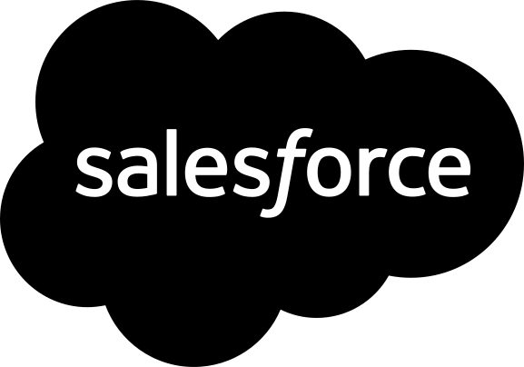
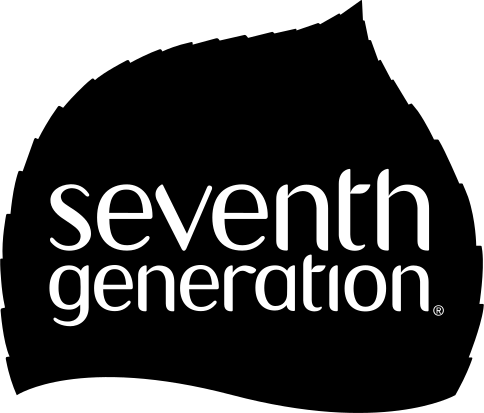
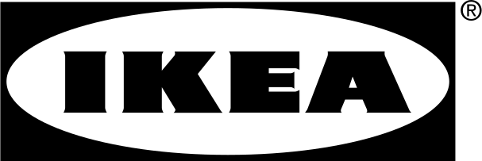
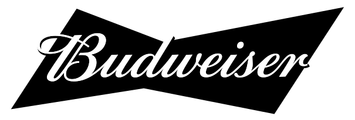
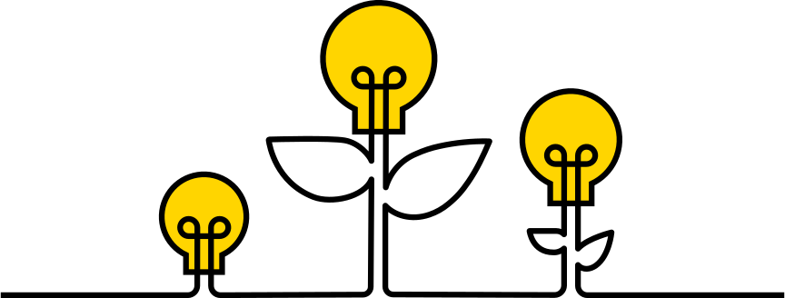
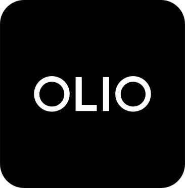

品牌有能力推动数 10 亿消费者的行为。
随着政府和企业宣布气候状态告急并争取实现零碳排放，我们相信是时候使用这股力量应用于产品中去了。 因此，在新的 10 年开始之初，我们庆祝“零英雄”，即在危机时期鼓励积极行为的品牌。
一起， Wolff Olins 与 Chapter Zero 正在使用这个观点武装董事会和市场领导者：他们需要确保品牌是造福大众的力量。
Wolff Olins 与 Chapter Zero 报告
2020年02月
品牌有能力推动数 10 亿消费者的行为。
随着政府和企业宣布气候状态告急并争取实现零碳排放，我们相信是时候使用这股力量应用于产品中去了。 因此，在新的 10 年开始之初，我们庆祝“零英雄”，即在危机时期鼓励积极行为的品牌。
一起， Wolff Olins 与 Chapter Zero 正在使用这个观点武装董事会和市场领导者：他们需要确保品牌是造福大众的力量。
您可能会认为该品牌通过“绿色环保”这一洗脑概念鼓励我们过度消费，从而让我们陷入这场危机。 然而，品牌在很大程度上改变了人们的思维，感受和行为方式。 因此，品牌还能使我们摆脱这场危机吗？
这是我们的基本信念：品牌可以有所作为。 确实，我们在本报告中的中心假设是，品牌可以被用来触发全球影响力，从而在数十亿消费者中引发更多可持续性行为。
最新的消费者研究告诉我们：在带来正面影响时 —— 人们现在希望企业承担更大的责任。 活跃在这些不断变化的态度中的企业现在拥有巨大的机会：利用其品牌大规模赢得消费者。
对于需要向零碳运营过渡的大型老牌企业而言，这可能会很难。 – 并利用他们的品牌影响力，不仅仅是“绿色环保”概念.
但是，进行根本性变革的理由不再仅仅是一种社会责任问题； i这是一个问题，即在新竞争者摆脱了负责任的麻烦并逐步扩大规模（更不用说吸引最优秀的人才）的时候，公司及其投资者愿意承担多少风险。
因此，这样一个存在的问题应该是公司首席执行官及其董事会而不是纯粹的可持续发展官员所关心的。
“We face a direct existential threat…Our fate is in our hands.” António Guterres，联合国秘书长
这正式已经需要作出刻不容缓改变的理由。
根据政府间气候变化专门委员会（IPCC）2018年9月发布的报告，我们有12年的时间避免对地球造成灾难性的后果。
世界经济论坛的《全球风险报告》表明，全球公民认为这种危险是明确而现实的；他们担心环境灾难-由气候变化和极端天气事件等驱动-比对其安全性的任何技术或社会威胁更为严重。
消费者也要求企业也要改变。近三分之二（60％）的英国公众认为，公司的首席执行官应该领导全国抗击气候变化的斗争。*
* 根据咨询公司Kin＆Co进行的研究，该调查分别询问了两组分别对1,203和2,084名成年人的态度，他们对可持续商业和气候行动的态度。
迫切的变革需求带来了机会：引领可持续发展的组织可以以更加相关的方式使其与竞争对手区分开来。简而言之，他们可以建立更具吸引力的品牌。
CBI 的总干事 Carolyn Fairbairn 强调了领导变革的好处：
“到2050年实现净零经济将需要所有行业的企业采取紧急行动。公司必须通过将气候变化作为董事会的首要任务来应对投资者和客户不断增长的需求。现在采取行动的公司将不仅在避免气候变化的破坏性影响方面发挥作用，而且还将向竞争对手发起冲击。”
需要彻底改变，而业务是推动这种改变的关键；不仅涉及重工业或发电的公司，而且包括汽车，时装，零售，旅行和食品等行业的消费品牌。
好消息是企业正在做出回应。例如，美国200家最大的公司中有181家的老板已经将“公司宗旨”的正式定义从为股东赚取尽可能多的钱变成了通过寻找员工，照顾员工而“改善我们的社会”。环境和道德操守 *
* 商业圆桌会议，2019年8月
坏消息是，现在有许多品牌在讲述如何使世界变得更美好的故事非常相似：SC Johnson “为改善世界而努力的家族企业”。 Caterpillar “提供支持社区并保护地球的解决方案”。Whole Foods “滋养人类和地球”。
危险的地方在于， 如果每个人都跳上同样的潮流，讲同样的故事，并使用同样有价值，理性的语言，品牌就会失去力量。它们的影响力将为零。
中立。零影响。 无净贡献。这些是公司要实现的碳排放量目标。但是，它们是任何公司都希望其品牌成为现实的最后一件事。
随着越来越多的公司通过以碳中和和零影响为目标来应对气候紧急情况，存在很大的风险：品牌（其变革力量源于情感和独特性）都开始看起来和感觉相同：中立。
正如最近的一项研究 * 所指出的那样，55％的消费者表示，公司在创造更美好的未来方面比当今的政府更重要。但这并不意味着品牌可以假设人们想听听他们所有最新的CSR计划。
* 2019年全球``有意义的品牌''报告-基于31个国家/地区的1,800个品牌和350,000名受访者。
确实，同一项研究突出表明，消费者不会在乎是否有77％的日常品牌消失了。在欧洲，这一比例上升到81％。
在英国，虽然90％的英国人希望品牌提供内容，但63％的人认为英国品牌所创造的内容很差，无关紧要且无法交付。
很多品牌将消费者拒之门外。仅是因为消费者关心地球，并不意味着他们会关心您的供应链管理。
YouGov 对 28 个国家和地区的 30,000 个人进行的一项新研究发现，“气候变化正在发生”和“人类至少部分负责”是世界上大多数消费者的观点。
根据国家的不同，只有0％到6％的人认为“没有任何气候变化在发生”，同样，每个国家中只有1％到9％的人认为气候变化正在发生，但它有“与人类活动无关。” 在这两种情况下，美国都是最有可能持有这些观点的地方。
而且，大多数人期望气候变化对他们的生活产生大的或中等的影响。
在承担责任时，每个人都应为当前的状况承担应有的责任：所有国家/地区的大多数人都认为，国际机构，富裕国家和发展中国家的国家政府，企业和行业以及个人都是“对气候变化的当前状况负有“非常或完全”的责任。当被问及应归咎于哪些国家时，主要指的是中国和美国，而印度现在排在第三位。
但是，在美国和大多数接受调查的欧洲国家中，已经有超过40％的人认为他们在个人层面上正在“尽其所能”，而政府和企业应该做的更多。
确实，在一些欧洲国家，人们相信个人缺乏为战斗做贡献的力量。在德国和挪威，人们似乎特别被剥夺了选举权，其中有54％的人说，人们几乎没有权力来应对气候变化。
人类的新研究-定性研究专家专注于“造福”组织的研究-建议消费者感到痛苦，因为“做得更好”的责任不断地落在他们身上。
“他们（大公司）是用塑料包裹东西以节省开销的人……但是，我们剩下的就是如何处理它以及对它感到内的问题，而我们甚至没有首先要求它。” Humankind UK qualitative research, 2019年
当人们感到自己已经在做自己想做的事时（例如，做一些改变，例如重新使用书包和关掉灯），他们不高兴被要求做更多的事情和做出牺牲，尤其是当他们看到负责解决问题的人做得很少时。
“我回收利用，我购买有机鸡肉，我看东西的来源……但是有很多事情您没有考虑，也没有时间考虑，我不能一直做所有事情！” Humankind UK qualitative research, 2019年
考虑到所有这些因素，品牌显然仍然有很大的机会使有意识的消费变得可取，而不是像其他琐事一样使个人承担更多责任。
品牌的价值来自于独特，令人难忘且具有强大的情感力量。
这就是为什么,在 Wolff Olins 与 Chapter Zero 的合作中，我们向“零英雄”们开了个亮光-那些对低碳证书low之以鼻的品牌，反而使之有吸引力并易于消费者引导低碳生活-可能产生更大的影响。
通过庆祝这些品牌，我们希望能够帮助董事会成员和营销主管提出正确的问题，并引导公司远离一切陈词滥调，中立的主张：它们的存在是为了“让世界变得更美好”。
关于“英雄”应该推动哪些行为，伦敦格兰瑟姆学院（伦敦帝国学院气候变化和环境中心）最近发表了“关于气候变化的9件事你可以做的”-列出了最可行的方法个人可以有所作为。总之，他们鼓励的行为是：
下面，我们就品牌如何鼓励这些更具可持续性的行为，并通过来自各个领域和市场的实例使它们变为现实，制定了七个原则。
旨在激发变化的品牌应该抵制吹嘘自己的诱惑。相反，他们应该为数以百万计的人们提供改变其行为的方法。例如…
Greggs 在英国大约2,000家店铺中进行交易，每周销售150万个香肠卷。在2019年，他们与Quorn（该品牌本身在鼓励消费者朝正确的方向迈出一步）创建了一个新的素食主义者选择。尽管遭到了Piers Morgan的反对，但在超过2万人签署了Peta的在线请愿书之后，Greggs的纯素食香肠卷还是为响应公众需求而推出。此后，格雷格斯报告了半年销售额增长14.7％，托管商店的同类销售额增长10.5％。面包连锁店的首席执行官罗杰·怀特塞德（Roger Whiteside）甚至宣布自己现在是素食主义者。
大型电子产品零售商百思买（Best Buy）正在帮助客户更可持续地使用电子产品，并鼓励他们打破已经成为行业准则的“一次性文化”的循环。百思买通过在员工，社区和消费者之间建立牢固的关系来做到这一点：它培训员工在其所有产品系列中推广节能模型；它在全美设有青少年技术中心网络，为服务欠缺社区的青少年准备将来的技术相关工作。自2009年以来，该公司已在其1000多家商店中回收了20亿磅的消费电子产品，并通过提供维修和以旧换新的方式使更多的垃圾掩埋。
就像阿比盖尔·福赛斯（Abigail Forsyth）一样，KeepCup的联合创始人说：“许多小小的举动都产生了巨大的变化。” 自从大约十年前在一个小型设计市场上将第一台KeepCups卖给爱好咖啡的墨尔本人以来，该品牌就已经开始推动行为的改变，从丢弃到再利用。如今，KeepCups 已在全球超过65个国家/地区使用，每天从垃圾填埋场转移数百万个一次性杯子。
品牌可以通过将其视为“正常行为”，而不是将其作为激进的选择（因此是冒险或不寻常的选择），从而使采用新行为变得更加容易。例如…
英国能源公司Bulb直到2015年才成立，但在短短三年内就签约了30万户家庭，并获得了家庭能源市场的1％。但是，成功并非仅仅通过大喊公司的绿色证书来建立。的确，尽管仅使用可再生能源，但Bulb还是市场上价格最具竞争力的供应商之一，并且能够通过提供优质的客户服务，低廉的价格和低廉的价格，有效地从不受欢迎的现有企业（例如British Gas和E.ON）中窃取不满意的客户。易于理解的账单以及仅使用100％可再生能源的承诺。灯泡品牌使拥抱可再生能源似乎是明智的选择，而不是不寻常的选择。
Oatly 是瑞典的纯素食食品品牌，生产燕麦替代乳制品的替代品。燕麦奶的推出是“像人类一样的牛奶”，旨在将产品定位为对您个人（以及地球）健康的积极更好的选择，而不是“替代”或有价值的产品。正如Oatly的创意总监Michael Lee指出的那样：“当您开始在传播中讲道时，它就变得la脚了。” 该品牌通过聘请咖啡师将自己嵌入咖啡文化咖啡中，并锁定弹性主义者和减肉剂，而不仅仅是铁杆纯素食者，从而确保了主流吸引力。Oatly在美国（Oatly现在与星巴克合作）和欧洲的销售激增，也推动了对新的可持续生产工厂的快速投资。

Salesforce 是一家美国的基于云的软件公司，已围绕帮助公司跟踪其销售指标建立了130亿美元的业务；现在，它也帮助他们跟踪“绿色”指标。正如《财富》杂志“可持续发展之星”报告指出的那样，其新应用程序使Salesforce客户可以测量和分析整个运营过程中的碳排放，包括数据中心的设备和员工的商务旅行。该应用程序目前在10个客户的试点计划中，是更广泛的 Salesforce 活动的一部分，该活动旨在规范向股东透明地报告对环境的影响的想法-Salesforce在其自己的年度文件中赢得了证券法专家的称赞。
品牌可以通过指出整个行业所面临的重大问题来确立自己的领导资格证书并推动广泛的变革-然后邀请其他人合作并共同承担责任，而不是简单地独自解决。例如…
荷兰航空公司荷航（KLM）的首席执行官彼得·埃尔伯斯（Pieter Elbers）已明确表示，航空业的可持续发展不是“单一航空公司的主题”。荷航相信，只有作为一个行业共同努力才能取得真正的进步，因此，荷航发起了“负责任飞行”倡议，邀请航空公司，合作伙伴，客户和员工共同分享荷航现有的可持续发展实践和工具，并向荷航提供各自的见识作为回报。在其广告中，荷航甚至要求旅客收拾行李或只是不要飞-而是考虑使用更环保的选择，例如短途旅行的火车或长途汽车。
Triodos 于1980年在荷兰成立，目前在欧洲拥有超过500万客户，提供在荷兰，英国，西班牙和德国的经常账户。Triodos 仅将钱借给“对社会产生积极影响”的组织和项目，目的是使人们真正考虑银行用钱做什么。该银行表示：“不必在武器贸易，化石燃料和烟草上投资金钱，它可以用来做有益的事情，帮助建立我们想要生活的社会。”
希尔顿酒店(Hilton)成立100周年后，正在寻找新方法来使该行业更具可持续性并保持其品牌相关性。根据一项对72,000名希尔顿宾客的调查，社会，环境和道德考虑因素是他们购买偏好的核心，尤其是25岁以下的顾客。因此，希尔顿致力于成为第一家使用基于科学的策略来帮助保护我们的自然资源的大型连锁酒店。希尔顿的“有目的旅行”战略着眼于减少用水量，向垃圾填埋场发送零肥皂水，并于2020年在200家酒店中启动其“互联客房”应用程序，使客人能够跟踪和控制其房间的空调，暖气的影响和灯。
如果品牌将产品定位为不仅仅是“替代品”或“牺牲品”，而是更严格和精心设计的品牌，则可以说服人们做出更具可持续性的选择（因此比竞争产品更好，不仅对地球有利） 。例如…
Everlane 是一家美国服装零售商，销售价格实惠的优质基本服装，例如100美元的羊绒毛衣，15美元的pima纯棉T恤和65美元的日本牛仔牛仔裤。它于2010年推出，本着“根本透明”的概念，为客户提供制造每种产品的成本的完整明细，从原材料和运输的价格到 Everlane 的加价幅度。该品牌的设计美学避开潮流和高色彩，取而代之的是永恒的废话和至关重要的，持久的风格，以面对快速时尚。

Seventh Generation 是美国最大的环保清洁用品销售商，自2016年被收购以来，它是联合利华的28个可持续生活品牌之一-与2018年其他业务相比增长了69％，而联合利华在2018年的增长速度为69％。 2017年。该品牌的名称受到其使命的启发，该使命是创造“一场促进未来七代人健康的消费者革命”。通过强调基于植物的清洁产品可以提供消费者所期望的强大功效，Seventh Generation确保人们感觉到他们正在获得一种既有益于家庭又有益于良心的高性能产品。
Deciem 自豪地将自己描述为“特别美妆公司”。它于2013年开始交易，并于2017年获得雅诗兰黛的投资，目前在美容界拥有和经营10多个品牌。在2019年，Deciem 在黑色星期五关闭了其网站和商店，并指出“我们不再认为黑色星期五是对地球或消费者友好的活动”。这种行动表明了品牌如何重新定义美容类别中“质量”选择的含义-使可持续发展和道德行为成为其定义的核心，而不仅仅是附加条件。的确，该品牌声明：“今天的质量意味着真诚，与众不同，实用，美观和价格合理，甚至对富人也是如此。我们选择服务于受过教育的，好奇的和聪明的人，他们赞赏我们对这一非常真实的质量定义的贡献。”
品牌可以通过签约跨类别的俱乐部，领导力倡议和致力于推动积极变革的联盟来提高公众对可持续实践的意识和需求。例如…
可再生能源100强企业是世界上最具影响力的公司组成的联盟，最迟将在2050年之前实现100％可再生能源的使用。由气候小组与CDP合作领导的RE100的宗旨是在全球范围内加速向零碳网格的转变。RE100的成员包括全球知名品牌IKEA，Apple，Aviva，BT和Google。RE100现在已超过200个成员的里程碑，推动了220 TWh的可再生电力需求-几乎足以为印度尼西亚供电。

Certified B 集团是满足经验证的社会和环境绩效，公众透明度和法律责任制以平衡利润和宗旨的最高标准的企业。 B 集团企业现在包含 Patagonia, The Body Shop, Ella’s Kitchen, Allbirds, Intrepid Travel 与 The Guardian 等知名子品牌。 B Corp 社区致力于减少不平等现象，降低贫困水平，营造更健康的环境，增强社区实力，并创造具有尊严和目标的更高质量的工作。 B 集团还组成了领导者社区，并推动人们以商业为美好力量进行全球迁移。
Chapter Zero 是由公司主席，委员会主席和非执行董事组成的网络，致力于发展他们对气候变化研究，对英国企业的影响。 鉴于其深远的影响和影响，Chapter Zero 的目的是使这些董事能够了解气候变化对公司和行业的影响的可能性，并鼓励其董事会进行知情讨论并有效应对气候变化挑战。该网络的名称为 Chapter Zero，反映了朝着实现零碳净经济发展的动力，而企业将在实现零碳经济中发挥主要作用。
品牌不必为了完美地影响行为而声称自己是完美的。进行实验，学习和合作的承诺可以帮助品牌理解并与消费者建立更深的联系。例如…

去年，宜家在伦敦格林威治开设了全球最可持续的宜家商店，并开设了新的学习实验室。自开业以来，宜家格林威治酒店已获得“杰出” BREEAM认证-可持续建筑的最高奖项。“这家商店将可持续性提升到一个新的高度，不仅是在设计和建筑上，而且还考虑到了当地社区的需求。我们希望通过研讨会和活动来激发伦敦人的生活，并使他们过上更加可持续的生活。” 宜家格林威治商店经理Helen Aylett说。在数字购物世界中，宜家格林威治店是一个令人耳目一新的理由。
Loop 是一个旨在通过“米尔克曼模型”实现零废物包装的新兴平台 —— 在耐用，可重复使用的容器中运送货物。 与大品牌合作，帮助他们大规模测试新的包装概念。联合利华，宝洁，高乐氏，雀巢，火星，可口可乐和百事可乐都重新设计了包装，以参与Loop的试点计划。。从橙汁和蛋黄酱到洗手液和清洁剂的产品都装在多用途容器中。甚至牙刷也可以重复使用，头部从下半部分脱落；可以将新的除臭剂棒放入重新使用的底座中。创始人汤姆·萨基（Tom Szaky）说：“它具有一次性使用的便利。” “这就是我们将包装和产品从消费者拥有的一次性使用产品转移到消费者耐用和借用的方式。”

百威啤酒正在帮助改变大众对可持续发展的态度，甚至使用其2018年的Superbowl电视广告来宣布百威啤酒“现在是用风力发电的。为了美好的明天。” 该品牌围绕四个支柱设定了2025年可持续发展目标：气候，水资源管理，包装和智能农业。这导致了实验性的新广告；与尼古拉汽车公司和特斯拉等运输公司建立了新的合作伙伴关系；与公用事业公司Enel的可再生能源交易；爱达荷大学，华盛顿州立大学与大麦种植者之间的合作，以试验新的节水和智能灌溉技术。

品牌可以设计全新的消费模式，从而创造新的和不同的机会来与消费者建立关系 —— 如果消费者觉得自己正在获得巨大的价值并减少对环境的影响，这将不是一件坏事。

Olio 是一款食物回收应用程序，旨在通过允许人们共享不需要的食物来解决食物浪费问题。用户为不需要的食物拍照，并邀请住在附近的Olio用户收集食物。至关重要的是，食物必须在使用期限内。Olio 还与30个组织合作，其中包括Sainsbury's 和食谱盒子公司 Hello Fresh。该平台以营利为荣，旨在通过为经常使用的用户提供优质功能（例如无限次取货和对最佳商品的首次拒绝）以及捐赠佣金和可为本地企业提供机会的分类部门来创收。与所在地区的人交流。
Depop 是一个社交购物应用程序，它将Instagram的美学和社交方面与eBay的买卖形式相结合。它成立于2011年，目前在147个国家/地区拥有1500万用户。Depop 销售商20年的销售商 Sylvie Mackower 表示：“不尽可能购买新产品，而对回收的物品感到厌倦的话，您的消费足迹就会很小。” 通过交易收费产生收入的Depop可以帮助其卖家赚钱，并使用户在购物时感觉更好，因为他们正在支持进取心的个人，而不是注定要运往垃圾填埋场的快速生产商。
Lush 是手工化妆品中的家喻户晓的名字，它证明了做一个好生意实际上可以是一个好生意。Lush 拥有100％的素食理念，符合道德的购买政策，对动物测试和“裸露”零塑料包装的坚定立场。在2018年全球，Lush 客户选择了 Naked，节省了660万瓶塑料沐浴产品。它还有一个称为 5 Pot Programme 的回收计划，该计划鼓励客户重复使用Lush产品随附的黑锅。该公司遵循“禁止广告政策”-禁止电视广告或名人代言，而是依靠由客户产生的宣传。
下面, Wolff Olins 与 Chapter Zero 提出了一些实用的问题，非执行董事（NED）和首席营销官（CMO）今天可以提出这些问题 — 激励自己和他们的组织迅速开始有所作为。
我们的员工 如何参与当今的可持续发展议程？
今天，在与客户的讨论中，我们有多少时间致力于可持续性？
我们是否正在积极 研究 消费者对气候变化的态度？
气候变化对我们的 品牌主张和个性有多深的影响（不仅仅是“价值”）？
我们对消费者，客户和员工的可持续发展计划有何反馈 ？
我们目前正在鼓励哪些负面的消费者行为-我们可以解决吗？
我们的投资组合中是否有现有品牌（杠杆程度低）可以带来积极的行为-还是需要投资新的品牌？
从对气候变化的影响来看，我们对我们广泛的类别表现得好坏有何见解？
我们可以加入哪些与我们行业相关的商户或联盟 ，并且我们确实可以从中汲取一些教训？（我们的竞争对手已经加入了哪些商会？）
我们可以进行哪些低成本，低风险的营销实验，这些实验可以对消费者的行为产生积极影响？